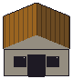
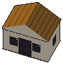
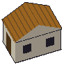
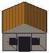
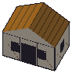
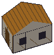
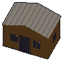
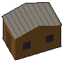
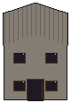
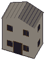
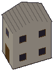
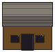
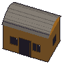
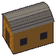
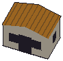
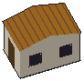
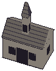
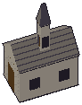
Każda kondygnacja ma duże okna i wysokość dopasowaną do postaci. Drzwi nie maleją w wyższych domach. Rasteryzacja programowa, nie zrzuty z gry.
Porównanie progów 1–3 / 4–6 / powyżej 6 z postacią

















